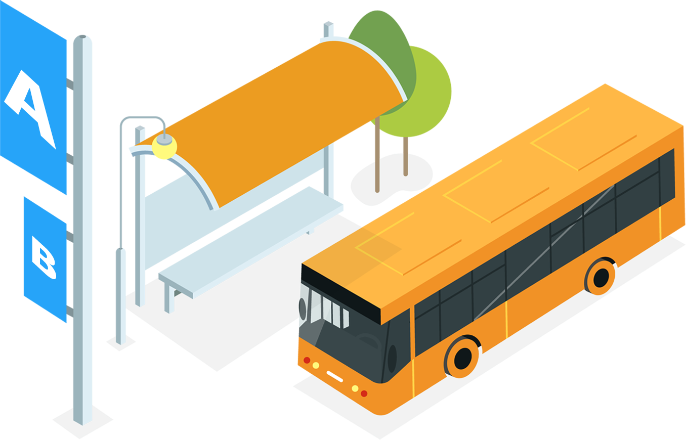
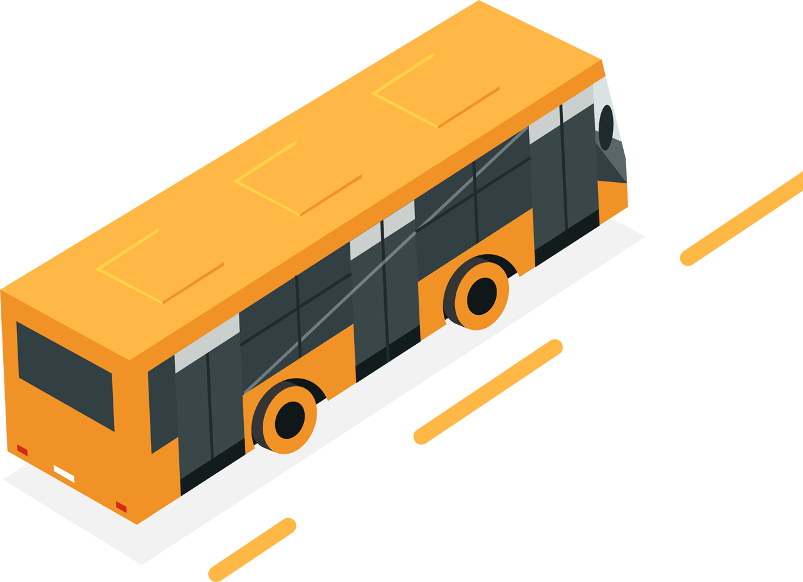

Cơ sở A
(59C Nguyễn Ðình Chiểu, phường 6, quận 3, TP. Hồ Chí Minh)
(59C Nguyễn Ðình Chiểu, phường 6, quận 3, TP. Hồ Chí Minh)

- Từ Bình Thạnh đón tuyến số 31 (Đường Nơ Trang Long).
- Từ Đại học Nông Lâm đón tuyến số 93 hoặc số 6
- Từ Bến xe Chợ lớn/Xa lộ Hà Nội/Cơ sở B/KTX 43-45 đón tuyến số 150.
- Từ bên kia cầu Nguyễn Văn Cừ qua A là xe số 152, xe này ít chuyến, lượt về phải đi bộ đến ngã tư Nam Kì Khởi Nghĩa và Nguyễn Đình Chiểu mới có trạm xe.
- Từ KTX 135 Trần Hưng Đạo qua A đón xe số 152, về đón xe số 31.
- Từ Khu dân cư Trung Sơn đón tuyến số 152.
- Từ An Sương, Trường Chinh, Cộng Hòa, Nguyễn Văn Trỗi đón tuyến số 4.
Cơ sở B
(279 Nguyễn Tri Phương, phường 5, quận 10, TP. Hồ Chí Minh)
(279 Nguyễn Tri Phương, phường 5, quận 10, TP. Hồ Chí Minh)
- Từ cơ sở A đón tuyến số 150.
- Từ KTX 135 Trần Hưng Đạo đón tuyến 45, đến trạm xe trên đường Nguyễn Chí Thanh gần B.
- Khu vực như Lê Văn Sỹ, Trần Huy Liệu, và khu vực quận Gò Vấp có thể đi xe số 7.
- Khu vực Thành Thái, Lý Thường Kiệt, bên kia cầu Nguyễn Tri Phương có thể đi xe số 59.
- Từ Thủ Đức ta có thể qua B bằng xe số 10 hoặc 150.

Cơ sở E
(54 Nguyễn Văn Thủ, phường Đa Kao, quận 1, TP. Hồ Chí Minh)
(54 Nguyễn Văn Thủ, phường Đa Kao, quận 1, TP. Hồ Chí Minh)
- Từ cơ sở B, bạn có nhiều cách để đi: một chuyến 150, hoặc đi hai chuyến 10 và 54 dừng ở trạm Đinh Tiên Hoàng rồi đi bộ một đoạn đến cơ sở E.
- Từ KTX 135 Trần Hưng Đạo, sinh viên đón xe 45 ngay trước KTX hoặc đón xe số 93 ở Hàm Nghi.
- Cơ sở A và E khá gần nhau nên bạn có thể đi bằng xe số 93 hoặc 150.
- Khu vực Cách Mạng Tháng Tám muốn qua E nên đi hai chuyến, lúc đầu đón xe 30 để đi tới trạm Phạm Ngọc Thạch rồi tiếp tục đón xe 93 đi đến trạm Đinh Tiên Hoàng.
- Những bạn nhà xa ngoài Thủ Đức có thể đi xe số 93, dừng ngay trạm Nguyễn Văn Thủ.
Cơ sở 144
(144 Phạm Đức Sơn, Phường 16, Quận 8, TP. Hồ Chí Minh)
(144 Phạm Đức Sơn, Phường 16, Quận 8, TP. Hồ Chí Minh)
- Từ cơ sở B, bạn phải đi hai chuyến xe. Đầu tiên, đón xe số 7 tại trước cổng Nguyễn Tri Phương, dừng tại trạm Bến xe Chợ Lớn, rồi tiếp tục đón xe số 101 để đi đến trạm Chung cư Lê Thành.
- Từ KTX 135 Trần Hưng Đạo, bạn đón xe số 39 tại Chợ Dân Sinh và dừng ở trạm Đường số 18, lúc về cũng có thể đón 39 tại trạm An Dương Vương.
Tìm xe bus với BusMap
BusMap - Xe buýt Thành phố là một công cụ hỗ trợ tra cứu tuyến xe buýt. Ứng dụng BusMap cung cấp bản đồ các tuyến xe, theo dõi thời gian đến và rời bến của các xe buýt, thời gian chờ xe buýt theo thời gian thực.

Busmap